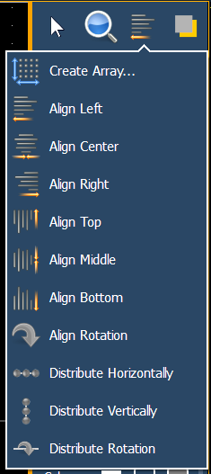
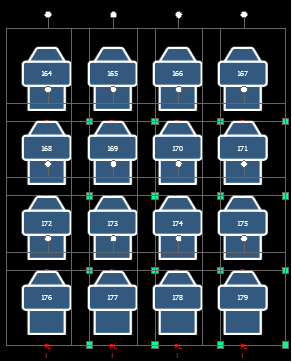
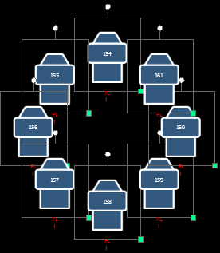
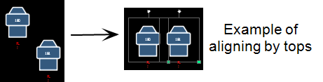
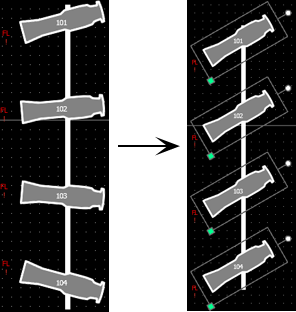
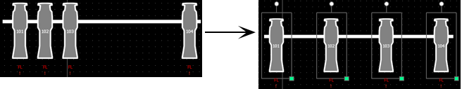
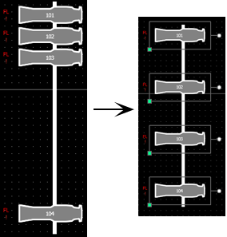
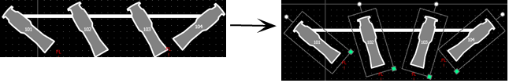

Alignment
Clicking on the alignment icon will open the alignment options, which include:

- Create Array- allows you to create arrays of objects. After placing one object of your choice, click on {Create Array} to open an additional window for choosing what array type you want to use.
- Rectangle - will layout a rectangle array of objects. You can define the rows, columns, and spacing.

- Circle - will layout a circle array of the objects. You can define the numbers of objects and the size of the circle.

- Align Settings - allows you to align objects either to the left, right, center, or top, middle, bottom.

- Align Rotation - allows you to select multiple objects and align their rotation to the first object selected.

- Distribute Horizontally -allows you to distribute objects horizontally at an equal distance apart between two objects. Set the distance you would like by placing the first and last objects. Then with all objects selected that you wish to distribute (including the first and last ones you positioned), click the {Distribute Horizontally} button.

- Distribute Vertically - allows you to distribute objects vertically at an equal distance apart between two objects. Set the distance you would like by placing the first and last objects. Then with all objects selected that you wish to distribute (including the first and last ones you positioned), click the {Distribute Vertically} button.

- Distribute Rotation - allows you to distribute objects at an equal rotation between two objects. Set the level of rotation you would like by placing the first and last objects at a rotation. Then with all objects selected that you wish to rotate (including the first and last ones you positioned), click the {Distribute Rotation} button.
